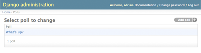
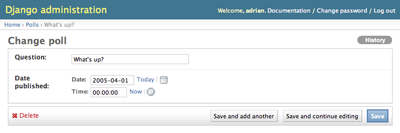
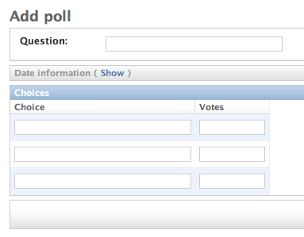

Escrevendo sua primeira aplicação Django, parte 2¶
Este tutorial inicia-se onde o Tutorial 1 terminou. Vamos continuar a aplicação web de enquete focando agora no site de administração automática do Django.
Filosofia
Gerar sites de administração para sua equipe ou clientes adicionarem, editarem ou excluírem conteúdo é um trabalho entediante que não requer muita criatividade. Por essa razão, o Django automatiza toda a criação da interface de administração para os models.
O Django foi desenvolvido em um ambiente de redação, onde havia uma clara separação entre “produtores de conteúdo” e o site “público”. Gerentes de site usam o sistema para adicionar notícias, eventos, resultado de esportes, etc, e o conteúdo é exibido no site público. O Django soluciona o problema de criar uma interface unificada para os administradores editarem o conteúdo.
A administração não foi desenvolvida necessariamente para ser usada pelos visitantes do site, mas sim pelos gerentes.
Ative o site de administração do Django¶
O site de administração não vem ativado por padrão – ele é opcional. Para ativá-lo para sua instalação, siga estes três passos:
Adicione "django.contrib.admin" às suas configurações de INSTALLED_APPS.
Execute python manage.py syncdb. Já que uma nova aplicação foi adicionada ao INSTALLED_APPS, as tabelas do banco de dados precisam ser atualizadas.
Edite seu arquivo meusite/urls.py e retire o comentário das linhas abaixo de “Uncomment the next two lines...”. Esse arquivo é um URLconf; entraremos em detalhes sobre URLconfs no próximo tutorial. Por enquanto, tudo o que você tem que saber é que ele mapeia as URLs principais para as aplicações. No final você deve ter um urls.py parecido com este:
from django.conf.urls.defaults import * # Uncomment the next two lines to enable the admin: from django.contrib import admin admin.autodiscover() urlpatterns = patterns('', # Example: # (r'^mysite/', include('mysite.foo.urls')), # Uncomment the admin/doc line below and add 'django.contrib.admindocs' # to INSTALLED_APPS to enable admin documentation: # (r'^admin/doc/', include('django.contrib.admindocs.urls')), # Uncomment the next line to enable the admin: (r'^admin/(.*)', admin.site.root), )(As linhas em negrito são as que precisam ser descomentadas.)
Inicie o servidor de desenvolvimento¶
Vamos iniciar o servidor de desenvolvimento e explorar o site de administração.
Lembre-se do Tutorial 1 onde você iniciou o servidor com:
python manage.py runserver
Agora, abra o navegador de internet e vá para "/admin/" no seu domínio local -- e.g., http://127.0.0.1:8000/admin/. Você deverá ver a tela de login:

Entre no site de administração¶
Agora tente acessar o sistema. (Você criou uma conta de superusuário na primeira parte deste tutorial, lembra? Se você não criou ou esqueceu a senha você pode criar novamente.) Você deverá ver a página inicial do admin do Django:

Você deverá ver alguns outros tipos de conteúdos editáveis, incluindo grupos, usuários e sites. Essas são as funcionalidades centrais que o Django inclui por padrão.
Torne a aplicação de enquetes editável no site de administração¶
Mas onde está nossa aplicação de enquete? Ela não está visível na página principal do admin.
Apenas uma coisa a ser feita: Nós temos que dizer para o site de administração que os objetos "Poll" possuem uma interface de administração. Para fazer isto, crie um arquivo chamado admin.py em seu diretório polls, e edite para que se pareça com isto:
from mysite.polls.models import Poll
from django.contrib import admin
admin.site.register(Poll)
Você precisará reiniciar o servidor de desenvolvimento para ver suas modificações. Normalmente, o servidor recarrega automaticamente toda a vez que você modifica um arquivo, mas a ação de criar um novo arquivo não dispara a lógica de recarga automática.
Explore de graça a funcionalidade de administração¶
Agora que nós registramos Poll, o Django sabe que ela deve ser exibida na página principal do site de administração:

Clique em "Polls". Agora você está na página "change list" (lista de edição) para as enquetes. Essa página exibe todas as enquetes do banco de dados e deixa que você escolha uma para alterar. Existe a enquete "What's up?" criada no primeiro tutorial:
Clique na enquete "What's up?" para editá-la:
Note que:
- O formulário é gerado automaticamente para o model Poll.
- Os diferentes tipos de campos (DateTimeField, CharField) correspondem aos respectivos widgets HTML de inserção. Cada tipo de campo sabe como se exibir no site de administração do Django.
- Cada DateTimeField ganha um atalho JavaScript de graça. Datas possuem um atalho "Hoje" e um calendário popup, e horas têm um atalho "Agora" e um conveniente popup com listas de horas utilizadas comumente.
A parte inferior da página fornece uma série de opções:
- Salvar -- Salva as alterações e retorna à change list para este tipo de objeto.
- Salvar e continuar editando -- Salva as alterações e retorna à página para este objeto.
- Salvar e adicionar outro -- Salva as informações e abre um formulário em branco para este tipo de objeto.
- Deletar -- Exibe uma página de confirmação de exclusão.
Altere a "Publication date" clicando nos atalhos "Hoje" e "Agora". Em seguida, clique em "Salvar e continuar editando." Então clique em "Histórico" no canto superior direito. Você verá uma página exibindo todas as alterações feitas neste objeto pelo site de administração do Django, com a hora e o nome de usuário da pessoa que fez a alteração:

Personalize o formulário de administração¶
Tire alguns minutos para apreciar todo o código que você não teve que escrever. Ao registrar o model Poll com admin.site.register(Poll), o Django foi capaz de construir uma representação de formulário padrão. Frequentemente, você desejará controlar como o site de administração se parecerá e funcionará. Você fará isso informando ao Django sobre as opções que você quer quando registra o objeto.
Vamos ver como isso funciona reordenando os campos no formulário de edição. Substitua a linha admin.site.register(Poll) por:
class PollAdmin(admin.ModelAdmin):
fields = ['pub_date', 'question']
admin.site.register(Poll, PollAdmin)
Você seguirá este padrão -- crie um objeto "model admin" e então o passe como segundo argumento para o admin.site.register() -- sempre que precisar alterar as opções do admin para um objeto.
Essa mudança específica no código acima faz com que a "Publication date" apareça antes do campo "Question":

Isso não é impressionante com apenas dois campos, mas para formulários com dúzias deles, escolher uma ordem intuitiva é um detalhe importante para a usabilidade.
E por falar em dúzias de campos, você pode querer dividir o formulário em grupos (fieldsets):
class PollAdmin(admin.ModelAdmin):
fieldsets = [
(None, {'fields': ['question']}),
('Date information', {'fields': ['pub_date']}),
]
admin.site.register(Poll, PollAdmin)
O primeiro elemento de cada tupla em fieldsets é o título do grupo. Aqui está como o nosso formulário se aparenta agora:

Você pode atribuir classes HTML arbitrárias para cada grupo. O Django fornece uma classe "collapse" que exibe um grupo particular inicialmente recolhido. Isso é útil quando você tem um formulário longo que contém um grupo de campos que não são comumente utilizados:
class PollAdmin(admin.ModelAdmin):
fieldsets = [
(None, {'fields': ['question']}),
('Date information', {'fields': ['pub_date'], 'classes': ['collapse']}),
]
Adicionando objetos relacionados¶
OK, temos nossa página de administração de Enquetes. Mas uma Poll tem múltiplas Choices, e a página de administração não exibe as opções.
Ainda.
Há duas formas de solucionar esse problema. A primeira é registrar Choice no site de administração, assim como fizemos com Poll. Isto é fácil:
from mysite.polls.models import Choice
admin.site.register(Choice)
Agora "Choices" é uma opção disponível no site de administração do Django. O formulário de "Add choice" se parece com isto:

Nesse formulário, o campo "Poll" é uma caixa de seleção contendo todas as enquetes no banco de dados. O Django sabe que uma ForeignKey deve ser representada no site de administração como um campo <select>. No nosso caso, só existe uma enquete até agora.
Observe também o link "Add Another" ao lado de "Poll". Todo objeto com um relacionamento de chave estrangeira para outro ganha essa opção gratuitamente. Quando você clica em "Add Another", você terá uma janela popup com o formulário "Add poll". Se você adicionar uma enquete na janela e clicar em "Save", o Django salvará a enquete no banco de dados e irá dinamicamente adicionar a opção já selecionada ao formulário "Add choice" que você está vendo.
Mas, sério, essa é uma maneira ineficiente de adicionar objetos Choice ao sistema. Seria muito melhor se você pudesse adicionar várias opções diretamente quando criasse um objeto Poll. Vamos fazer isso acontecer.
Remova a chamada register() do model Choice. Então edite o código de registro de Poll para que fique assim:
class ChoiceInline(admin.StackedInline):
model = Choice
extra = 3
class PollAdmin(admin.ModelAdmin):
fieldsets = [
(None, {'fields': ['question']}),
('Date information', {'fields': ['pub_date'], 'classes': ['collapse']}),
]
inlines = [ChoiceInline]
admin.site.register(Poll, PollAdmin)
Isso informa ao Django: "Objetos Choice são editados na mesma página de administração de Poll. Por padrão, forneça campos suficientes para 3 Choices."
Carregue a página "Add poll" para ver como está:
Funciona assim: há três blocos para Choices relacionados -- como especificado em extra --, mas a cada vez que você retorna à página de "Alteração" para um objeto já criado, você ganha outros três slots extras.
No entanto, há um pequeno problema. Um monte de espaço na tela é tomado para exibir todos os três objetos Choice relacionados a serem inseridos. Por essa razão, o Django oferece uma maneira alternativa para exibir cada objeto relacionado em uma única linha; você só precisa alterar a declaração ChoiceInline para que seja:
class ChoiceInline(admin.TabularInline):
#...
Com o TabularInline (em vez de StackedInline), os objetos relacionados são exibidos de uma maneira mais compacta, formatada em tabela:
Personalize a página "change list"¶
Agora que a página de administração de Polls está bonita, vamos fazer algumas melhorias à página "change list" (lista de edição) -- aquela que exibe todas as enquetes do sistema.
Aqui como ela está até agora:
Por padrão, o Django mostra o str() de cada objeto. Mas algumas vezes seria mais útil se pudéssemos mostrar campos individuais. Para fazer isso, use a opção list_display, que é uma tupla de nomes de campos a serem exibidos, como colunas, na change list dos objetos:
class PollAdmin(admin.ModelAdmin):
# ...
list_display = ('question', 'pub_date')
Apenas para facilitar, vamos incluir o método personalizado was_published_today do Tutorial 1:
class PollAdmin(admin.ModelAdmin):
# ...
list_display = ('question', 'pub_date', 'was_published_today')
Agora a página de edição de enquetes está assim:

Você pode clicar no cabeçalho da coluna para ordená-las por estes valores -- exceto no caso do was_published_today, porque a ordenação pelo resultado de um método arbitrário não é suportada. Também note que o cabeçalho da coluna para was_published_today é, por padrão, o nome do método (com underscores substituídos por espaços). Mas você pode alterar isso fornecendo ao método (em models.py) um atributo short_description:
def was_published_today(self):
return self.pub_date.date() == datetime.date.today()
was_published_today.short_description = 'Published today?'
Vamos adicionar uma outra melhoria à lista de edição: Filtros. Adicione a seguinte linha ao PollAdmin:
list_filter = ['pub_date']
Isso adiciona uma barra lateral "Filter" que permite às pessoas filtrarem a lista de edição pelo campo pub_date:

O tipo de filtro exibido depende do tipo de campo que você está filtrando. Devido ao pub_date ser um DateTimeField, o Django sabe dar as opções de filtro para DateTimeFields: "Any date," "Today," "Past 7 days," "This month," "This year."
Isso está tomando uma boa forma. Vamos adicionar alguma capacidade de pesquisa:
search_fields = ['question']
Isso adiciona um campo de pesquisa ao topo da lista de edição. Quando alguém informa termos de pesquisa, o Django irá pesquisar o campo question. Você pode usar quantos campos quiser -- entretanto, por ele usar um comando LIKE internamente, seja moderado para manter seu banco de dados feliz.
Finalmente, porque os objetos Poll possuem datas, é conveniente acompanhar por data. Adicione esta linha:
date_hierarchy = 'pub_date'
Isso adiciona uma navegação hierárquica, por data, no topo da change list. No nível mais acima, ele exibe todos os anos disponíveis. Então desce para os meses e, por último, os dias.
Agora é também uma boa hora para observar que a change list fornece uma paginação gratuitamente. O padrão é mostrar 50 itens por página. A change list, campos de pesquisa, filtros, hierarquia por data, ordenação por cabeçalho de coluna, todos trabalham em sincronia como deveriam.
Personalize a aparência do site de administracão¶
Obviamente, ter "Django administration" no topo de cada página de admin é ridículo. Isso é só um texto de exemplo.
É fácil de editar, no entanto, usando o sistema de templates do Django. O Django admin é feito com o próprio Django e conseqüentemente sua interface usa o sistema de templates nativo do Django. (How meta!)
Abra seu arquivo de configurações (mysite/settings.py, lembre-se) e veja a configuração TEMPLATE_DIRS. TEMPLATE_DIRS é uma tupla de diretórios de arquivos que serão checados quando carregar os templates do Django, ou seja, caminhos de busca.
Por padrão, TEMPLATE_DIRS vem vazio. Portanto, vamos adicionar uma linha para dizer onde nossos templates Django estão:
TEMPLATE_DIRS = (
"/home/my_username/mytemplates", # Change this to your own directory.
)
Agora copie o template admin/base_site.html de dentro do diretório padrão do Django admin (django/contrib/admin/templates) em um subdiretório admin onde quer que esteja o diretório que você está usando em TEMPLATE_DIRS. Por exemplo, se seu TEMPLATE_DIRS inclui "/home/my_username/mytemplates", como acima, então copie django/contrib/admin/templates/admin/base_site.html``para ``/home/my_username/mytemplates/admin/base_site.html. Não se esqueça do subdiretório admin.
Então simplesmente edite o arquivo e substitua o texto genérico do Django com o nome do seu próprio site como desejar.
Note que qualquer template padrão do admin pode ser sobrescrito. Para sobrescrever um template, apenas faça a mesma coisa que você fez com base_site.html -- copie ele do diretório padrão para o seu próprio diretório, e faça as mudanças.
Leitores astutos irão se perguntar: Mas se TEMPLATE_DIRS estava vazio por padrão, como o Django pôde encontrar o diretório padrão dos templates do admin? A resposta é, por padrão, o Django irá automaticamente procurar por um subdiretório templates/ dentro de cada pacote de aplicação, para usar como fallback. Veja a documentação do template loader - para a informação completa.
Personalize a página inicial de administração¶
De maneira similar, você pode querer personalizar a aparência da página inicial do admin do Django.
Por padrão, ele exibe todas as aplicações em INSTALLED_APPS, que estão registrados na aplicação admin, em ordem alfabética. E você pode querer fazer alterações significativas no layout. Além do que, a página inicial é provavelmente a página mais importante da página de administração, e deve ser fácil de usar.
O template a ser personalizado é o admin/index.html (faça o mesmo que foi feito com o admin/base_site.html na seção anterior -- copie ele do diretório padrão para o seu próprio diretório de templates). Edite o arquivo, e você verá que ele usa uma variavel de template chamada app_list. Esta variável contém todas as aplicações instaladas no Django. Em vez de usá-la, você pode explicitamente criar os links para os objetos específicos na página de administração da maneira que você achar mais apropriado.
Quando você se sentir confortável com o site de administração, leia a parte 3 deste tutorial para começar a trabalhar com parte pública da enquete.
Última atualização:
Dec 25, 2011